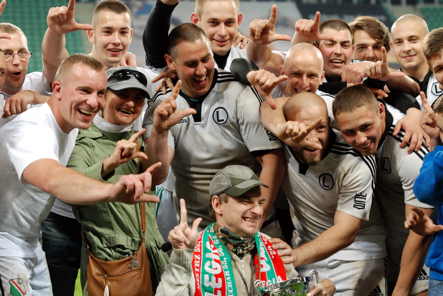

Moja pierwsza strona - pozdro GIT
O mnie

Od zawsze interesuje się sportem oraz komputerami. Grałem przez
kilkanaście lat w RUGBY. W wolnym czasie
uczę się frontendu. :)
Od zawsze interesuje się sportem oraz komputerami. Grałem przez
kilkanaście lat w RUGBY. W wolnym czasie
uczę się frontendu. :)
Od zawsze interesuje się sportem oraz komputerami. Grałem przez
kilkanaście lat w RUGBY. W wolnym czasie
uczę się frontendu. :)
Przejdź do pamiętniczka
Testuje modyfikator.
Pamiętniczek
Jak stworzyć prawidłowego HTML-a?
Tworzenie zgodnego ze stronami HTML-a to sztuka, która do
perfekcji opanowało niewielu. Jeśli chcesz stać się częścią tej
grupy, musisz wykazać się otwartą głową i dużą ilością wolnego
czasu...
Przejdź do artykułu o pisaniu HTML-a
Czy nagrywanie szkolenia to prosta sprawa?
Na początku myślałem, że całe szkolenie nagram w 2 tygodnie (o ja naiwny!). Samo planowanie zajęło dużo więcej! Na szczęście dzięki wspoarciu bliskich i sporej motywacji udało mi się wytworzyć schemat nagrania, który każdego dnia przybliża mnie do skończenia pracy.
Czy nagrywanie szkolenia to prosta sprawa?
Na początku myślałem, że całe szkolenie nagram w 2 tygodnie (o ja naiwny!). Samo planowanie zajęło dużo więcej! Na szczęście dzięki wspoarciu bliskich i sporej motywacji udało mi się wytworzyć schemat nagrania, który każdego dnia przybliża mnie do skończenia pracy.
Czy nagrywanie szkolenia to prosta sprawa?
Na początku myślałem, że całe szkolenie nagram w 2 tygodnie (o ja naiwny!). Samo planowanie zajęło dużo więcej! Na szczęście dzięki wspoarciu bliskich i sporej motywacji udało mi się wytworzyć schemat nagrania, który każdego dnia przybliża mnie do skończenia pracy.